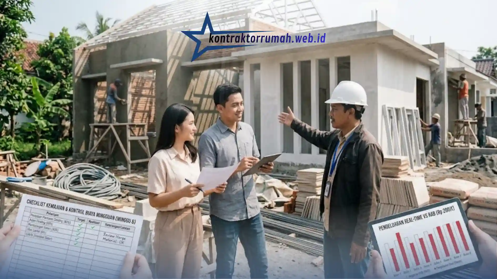

Menurut pengalaman banyak pemilik rumah, pembengkakan biaya (overbudget) hingga 20-30% dari rencana awal adalah hal yang jamak terjadi saat membangun rumah. Bayangkan Anda sudah menyiapkan dana Rp 200 juta, tapi di tengah jalan ternyata butuh tambahan Rp 40-60 juta hanya karena perubahan desain kecil atau lonjakan harga semen.
Poin Penting
- Sisihkan dana darurat 10-15% dari total anggaran untuk menutup biaya tak terduga.
- Desain minimalis meminimalkan sisa material & mempercepat waktu pengerjaan tukang.
- Selisih harga kecil per material bisa menghemat jutaan rupiah jika dikalikan volume total.
- Sistem borongan penuh memindahkan risiko pembengkakan biaya ke kontraktor, bukan ke Anda.
- Evaluasi anggaran setiap dua minggu agar pembengkakan biaya terdeteksi sebelum terlambat.
Kejadian seperti ini bukan kebetulan hampir selalu berakar dari perencanaan yang kurang matang dan kontrol pengeluaran yang longgar begitu proyek berjalan. Kabar baiknya, masalah ini sangat bisa dicegah asal Anda disiplin sejak hari pertama. Berikut tips mengontrol pengeluaran bangun rumah yang bisa langsung Anda terapkan, lengkap dengan alasan di baliknya, agar isi dompet tetap aman sampai rumah benar-benar berdiri.
Buat Rencana Anggaran Biaya (RAB) yang Detail
RAB adalah peta jalan keuangan proyek Anda. Catat semua kebutuhan mulai dari paku terkecil hingga upah tukang, lengkap dengan satuan harga dan volume kebutuhan. Semakin detail RAB Anda, semakin kecil ruang untuk "kejutan biaya" di tengah jalan.
Sisihkan Dana Darurat Sejak Awal
Jangan lupa sisihkan dana darurat sekitar 10-15% dari total anggaran. Dana ini bukan untuk dipakai santai, melainkan khusus menutup pengeluaran tak terduga seperti kenaikan harga material, perubahan desain kecil, atau kondisi tanah yang ternyata butuh perkuatan pondasi tambahan.
Tanpa pos ini, satu kejutan kecil saja bisa membuat seluruh alokasi anggaran lain jadi berantakan.
Pilih Konsep Desain Minimalis
Semakin rumit desain rumah banyak sekat, lekukan dinding, atau elemen dekoratif ukiran semakin banyak material yang terbuang sebagai sisa potongan, dan semakin lama waktu kerja tukang yang harus dibayar.
Lebih Presisi, Lebih Hemat Material
Desain minimalis dengan garis lurus dan bentuk sederhana justru meminimalkan pemborosan material karena ukuran-ukurannya lebih mudah dihitung presisi sejak awal.
Mempercepat Waktu Pengerjaan
Selain itu, desain minimalis juga mempercepat proses pengerjaan. Semakin cepat rumah selesai, semakin sedikit pula upah harian tukang yang harus Anda bayar dua keuntungan sekaligus dari satu keputusan desain.

Checklist evaluasi berkala membantu Anda membandingkan realisasi pengeluaran dengan RAB sebelum selisih biaya terlanjur jauh.
Survei Harga Material Secara Langsung
Jangan malas membandingkan harga antar toko bangunan, meskipun terasa merepotkan di awal. Selisih harga yang terlihat kecil, katakanlah Rp 500 per bata atau Rp 5.000 per sak semen, akan berdampak sangat besar ketika dikalikan dengan volume total pembangunan yang bisa mencapai ribuan bata dan ratusan sak semen.
Sebagai gambaran, jika Anda membutuhkan 10.000 bata dan menemukan toko dengan selisih harga Rp 300 per bata saja, itu artinya Anda bisa menghemat Rp 3 juta hanya dari satu jenis material. Kalikan dengan material lain seperti pasir, semen, dan besi, potensi penghematannya bisa jauh lebih besar.
Gunakan Sistem Borongan Penuh (Tenaga + Material)
Jika Anda tidak punya waktu memantau harga pasar harian atau tidak familiar dengan dunia konstruksi, sistem borongan penuh biasanya lebih terukur dibanding sistem harian. Pada sistem harian, biaya bisa membengkak jika pengerjaan molor dari jadwal.
Sedangkan pada sistem borongan, harga sudah disepakati di awal sehingga risiko itu berpindah ke pihak kontraktor, bukan ke Anda dengan catatan Anda memakai jasa kontraktor terpercaya dan kontrak kerja yang jelas dan tertulis.
Awasi Progres Secara Berkala, Bukan Hanya di Akhir
Banyak pemilik rumah baru sadar ada pembengkakan biaya justru saat proyek sudah 70-80% berjalan. Sebaiknya lakukan evaluasi anggaran setiap dua minggu sekali: bandingkan realisasi pengeluaran dengan RAB yang sudah dibuat. Jika ada selisih signifikan, Anda masih punya waktu untuk menyesuaikan pos anggaran lain sebelum semuanya terlanjur jauh.
Contoh Perhitungan Sederhana
Misalnya Anda memiliki dana Rp 200.000.000. Alokasi ideal bisa dibagi seperti ini:
| Pos Anggaran | Persentase | Nominal |
|---|---|---|
| Material (Bahan Bangunan) | 55% | Rp 110.000.000 |
| Upah Tukang (Tenaga Kerja) | 30% | Rp 60.000.000 |
| Biaya Lain-lain (Izin, Administrasi) | 5% | Rp 10.000.000 |
| Dana Darurat | 10% | Rp 20.000.000 |
Alokasi di atas hanya patokan umum. Jika lokasi lahan Anda berkontur atau butuh pondasi khusus, sebaiknya porsi material dan dana darurat sedikit dinaikkan, dengan kompensasi pengurangan pada pos biaya lain-lain yang sifatnya lebih fleksibel.
Catatan dari tim Kontraktor Rumah: Mengontrol pengeluaran bangun rumah bukan soal berhemat secara ekstrem, melainkan soal disiplin merencanakan dan konsisten mengevaluasi. Dengan RAB yang detail, pemilihan desain yang efisien, survei harga yang teliti, dan pengawasan berkala, rumah impian bisa terwujud tanpa harus mengorbankan tabungan masa depan Anda.
FAQ Seputar Kontrol Pengeluaran Bangun Rumah
Ingin memastikan pengeluaran bangun rumah Anda tetap terkendali sejak perencanaan hingga eksekusi? Konsultasikan RAB dan kebutuhan proyek Anda bersama tim kami sekarang.